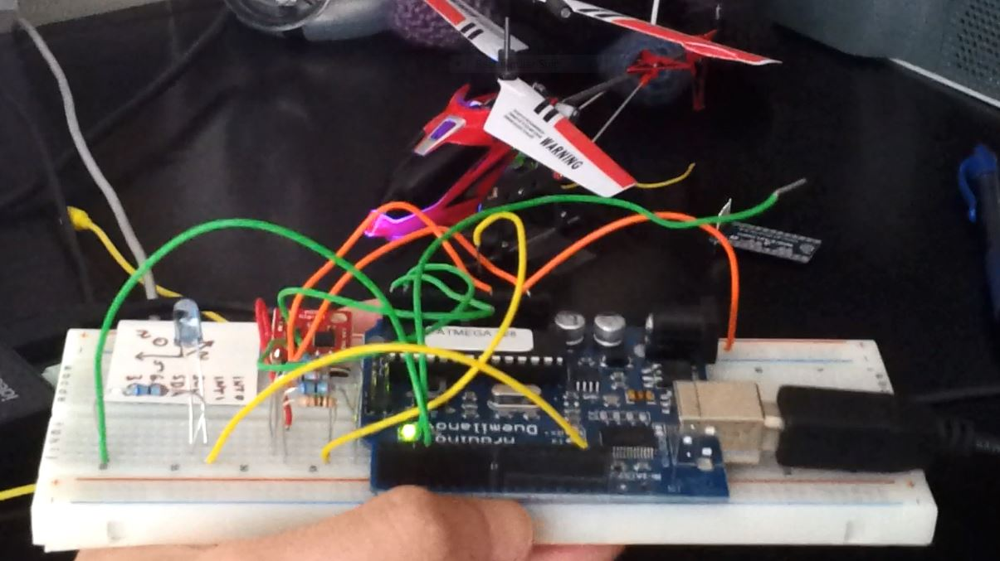

Matthew O'Shaughnessy
School of Electrical & Computer Engineering
Georgia Institute of Technology
matthewoshaughnessy@gatech.edu
Resume (updated December 2015)
GitHub Profile
Jump to:
- Work Projects
- Extracurricular Projects
- Class Projects
- Personal Projects
Welcome!
I'm a fourth-year Electrical Engineering student at Georgia Tech interested in signal processing and machine learning.I'm a co-op at Georgia Tech Research Institute, where I work on realtime processing for airborne bathymetric lidar. On campus, I'm involved with undergraduate research, the Georgia Tech Symphony Orchestra, and as an undergraduate teaching assistant.
Last summer, I had a great time working in the DSP Algorithms group at Boeing Satellite Systems in Los Angeles, CA.
Work Projects
Real-Time Bathymetric Lidar
My first semester at GTRI, I optimized and multithreaded the CPU portion of the processing code to allow real-time processing (my work was an instrumental part of making GTRI the first in the bathymetric lidar industry with real-time processing!) I also did significant debugging to give us an operational demo, which gave me a great understanding of how the entire system worked.
My second semester, I worked on C++ processing and data collection code for a hybrid lidar, which uses an infrared geiger-mode time of flight sensor to model the water surface and allow the system to correct for the refractive effect of waves. I also got to design signal processing algorithms in MATLAB to analyze the data we collected from our testing, which was used in technical reports delivered to the project sponsors.
My third semester, I worked on developing the hardware for a topographic version of our lidar system and created signal processing and computer vision algorithms in MATLAB for coordinate computation, fusing hyperspectral imagery to our lidar point cloud. (Pictured: our lidar set up for testing!)
- More about the GTRI real-time bathymetric lidar
- Topics: Lidar, signal processing, CPU/GPU/FPGA software development
- Languages: MATLAB, C++, CUDA, VHDL
Extracurricular Projects
Convex Optimization for Localization from Binary Comparisons
Many localization approaches in machine learning (e.g., classical multidimensional scaling) recover the locations of objects in some space given a dissimilarity matrix--for example, recovering a map from a list of distances between cities. My research deals with a variant of this problem where only binary comparisons between objects are known (there is evidence that many real-life applications, such as consumer preference, are much more accurate when only a binary choice between two objects is offered). I've formulated the problem as a convex optimization problem and have developed optimization algorithms in MATLAB to solve it. I've created simulations for the Georgia Tech high performance computing cluster to develop "rules of thumb" of parameter choices and quantify performance trade-offs between different optimization algorithms. Using this, I am working on developing a recommendation system that can iteratively improve the accuracy of an embedding when presented with streaming comparisons (pictured: visualization of the binary comparisons used for reconstruction and the resulting optimization cost function).
- Topics: Optimization theory, machine learning
- Language: MATLAB
Neural Networks for Accessibility Device Data Fusion
{kind=link}
With my undergraduate research group, I implemented neural networks for classification and fusion of data from a multi-modal accessibility device. Individually, I implemented performance-intensive portions of the training algorithm in CUDA C++. Ultimately, the data transfer time between the CPU and GPU for our resulted in execution times longer than purely-CPU execution times when tested with relatively low-dimensional handwritten digit classification, but GPU implementation will result in performance gains for data sets with higher dimensionality (pictured: our poster that won 3rd place at the ORS research competition!)
- Poster presented at Georgia Tech Undergraduate Research Symposium, April 2014
- Topics: Machine learning, GPU programming
- Languages: MATLAB, Python (using NumPy and SciPy), CUDA
MapReduce/Apache Hadoop Simulator
{kind=link}
With my undergraduate research group, I wrote a simulator for Apache Hadoop to allow estimation of MapReduce job times before execution. I was largely responsible for the design and implementation of the distributed storage component of the simulator, which allowed users to estimate execution times of different network topologies (pictured: our poster that won 2nd place at the ORS research competition!)
- Poster presented at ORS Research Competition, April 2013
- Topics: Distributed computing, MapReduce/Hadoop, software development
- Languages: Java
CS 1371 Practice Test Question Bank
Previous versions of the CS 1371 practice question bank were difficult for students to use and instructors to update. The new question bank I lead development of features interactive checking of multiple choice and code tracing questions, and allows TAs to easily add and update questions with a built-in error flagging system. A MATLAB program automatically parses data from old exam questions and adds them to the website.
- Available: link
- Languages: HMTL, CSS, JavaScript/jQuery, Python, Jinja2 Templating Engine, Google App Engine, MATLAB
Class Projects
RADAR Project

(ECE 4271 - Applications of DSP) I developed the signal processing algorithms to analyze RADAR returns to determine the range, velocity, and radar cross-section (RCS) of multiple targets from the fast-time/slow-time matrix of a fighter jet.
Speech Enhancement Project
(ECE 4271 - Applications of DSP) I used short-term Fourier analysis of signals from a microphone array to determine the location of a speaker in a noisy room. After the location of the speaker was determined, I used MVDR Beamforming to enhance the speech signal and linear prediction to verify formants of the original signal matched formants of the enhanced signal.
Echocardiogram Tracking Project
(ECE 4271 - Applications of DSP) I tracked the movement of a patient's interventricular septum from ECG video with two-dimensional cross-correlations.
Seismic Oil Detection Project

(ECE 4271 - Applications of DSP) I used spiking and predictive deconvolution were to spike a wavelet to determine the impulse response of the earth. I then used prediction filters to remove echoing, and determine the depth of water, limestone, and oil layers in the earth.
Pipelined MIPS Processor
(ECE 3056 - Computer Architecture) In VHDL, I added hardware to a single-stage MIPS processor to create a five-stage pipelined processor. I added data forwarding and pipeline flushing features to handle branch and data hazards. Mentor Graphics ModelSim was invaluable for debugging at the waveform level (pictured: debugging my processor with Mentor Graphics tools).
Analog Electronics Lab
(ECE 3043 - Measurements, Circuits, and Microelectronics Laboratory) I designed, created with a breadboard, and tested passive and active low-, high-, band-pass, and notch filters, linear and relaxation oscillators, BJT amplifiers, and diode and MOSFET circuits. I simulated each circuit using NI Multisim and SPICE, and tested my implementation using a scope and function generator (pictured: SPICE simulation of quadrature oscillator).
Embedded Battleship Game
(ECE 2035 - Hardware/Software Programming) I created an embedded battleship player in C++ and ARM assembly on the mbed microcontroller that played the most statistically optimal game of battleship against an opponent provided to us. I used MATLAB to prototype and visualize the algorithm before implementing it in C++/ARM (pictured: MATLAB prototype showing probabilities of hit per tile for each turn).
Efficient Tile Puzzle Solver
(ECE 2035 - Hardware/Software Programming) I created a solver for a rotating tile puzzle in C and rewrote for efficiency in MIPS assembly. The project was graded on assembly performance by number of instructions stored and executed and storage/stack space used compared to others in the class.
Robot Self-Test on FPGA
(ECE 2031 - Digital Design Lab) With a group, I created a self-test program on a designed single-stage processor for an FPGA-based robot. Used VHDL and a simple assembly language created for a single-stage processor to verify the battery level and operation of robot inputs and outputs, sonar, and motors.
Java Implementation of Basic Data Structures
(CS 1332 - Data Structures & Algorithms) I implemented stacks, queues, priority queues, singly and doubly linked lists, binary, balanced, and self-balancing trees, hashmaps, sorting algorithms, and graph search algorithms in Java.
Personal Projects
Motion-Controlled RC Helicopter
My roommate and I got these $20 RC Helicopters. Using an IR receiver LED and an Arduino-based logic analyzer, I determined the control signals for my helicopter and created a new controller with an accelerometer and gyroscope that uses tilt controls to fly the helicopter (pictured: IMU and IR LED connected to arduino).
- Languages: Arduino, C, AVR Assembly, MATLAB/Simulink (testing/debugging)
Georgia Tech Registration Alerts
When my registration slot for Fall of my second year opened, every ECE class I had the prerequisites for was full. To prevent the same from happening the next semester (and, of course, avoid early morning sections), I made a command-line utility to monitor registration numbers and send me text alerts when sections opened up. My program features a custom logging utility and network analytics that export to MATLAB for visualization.

- Source: link
- Languages: Java, MATLAB (network latency visualization), jsoup and google-voice-java libraries
In progress: Beat Detection & Tracking

Taking inspiration from this paper and other sources, I wrote a program to decect and track the beat in music. For many overlapping frames in an input song, I applied a filterbank and for each frequency band, calculated the signal envelope by applying the Hilbert transform and using a half-hanning window as a low-pass filter. Next, I applied a first-difference filter and rectified the result, giving me a signal that had large peaks at times where there was a large increase in sound energy. Finally, I applied a comb filter and selected the frequency (tempo) with the greatest output energy. In the future, I'd like to implement a Kalman filter to avoid one-off errors where the comb filter detects half the actual tempo.
- Source and project details: link
- Languages: MATLAB (heavily used Signal Processing and DSP Toolboxes)
Based on theme by orderedlist